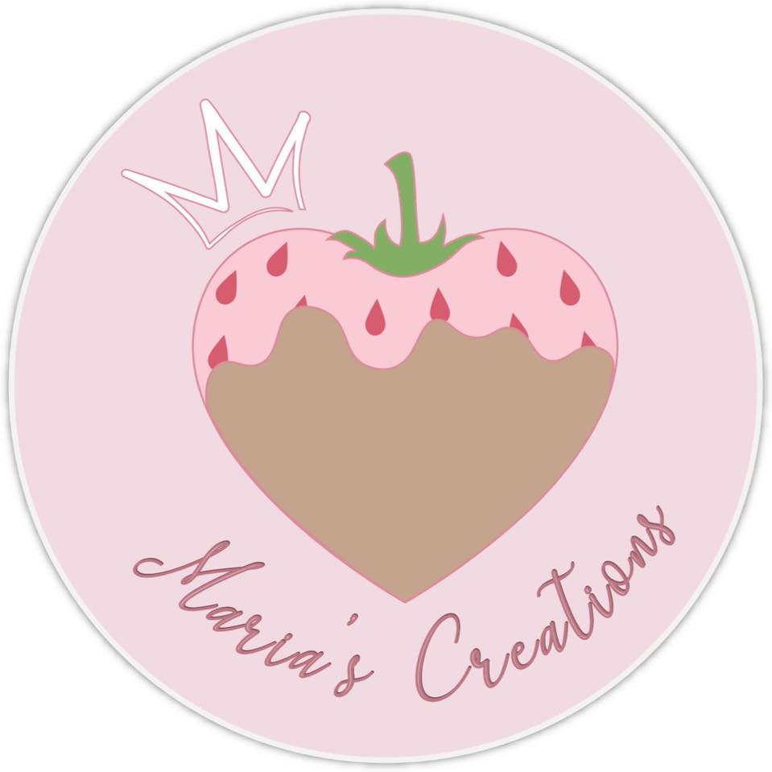
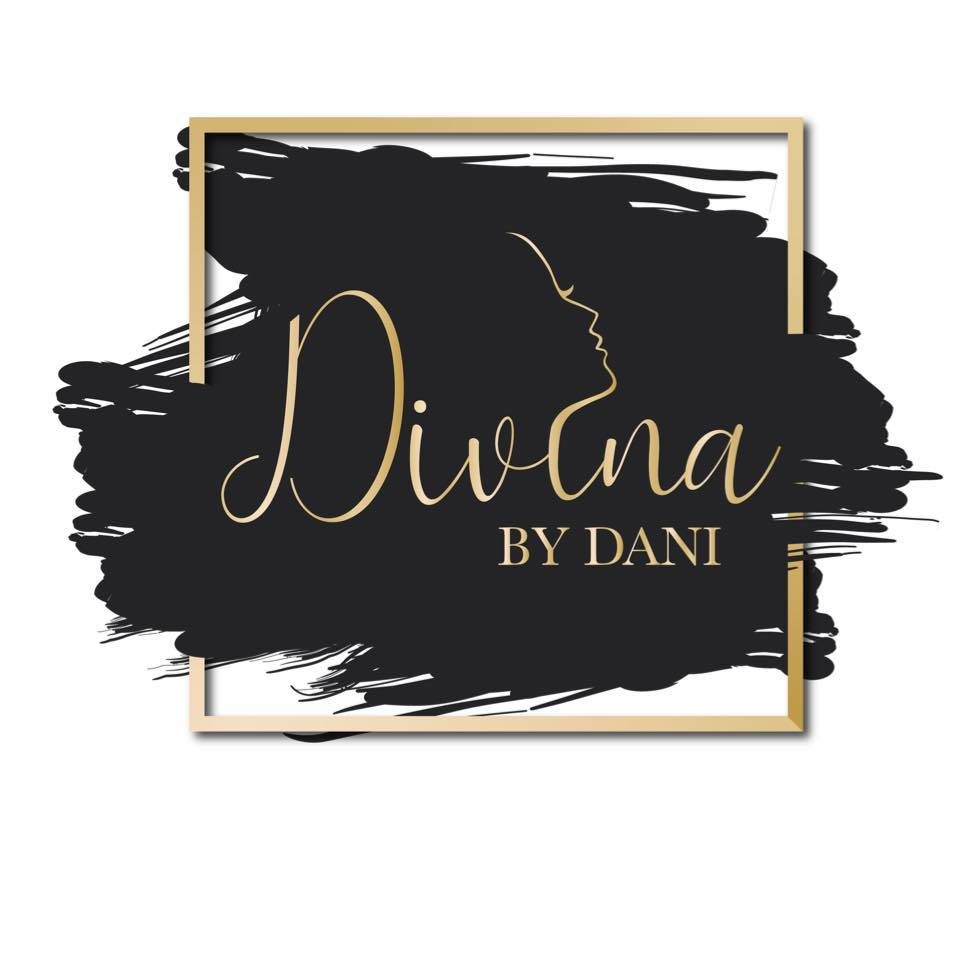
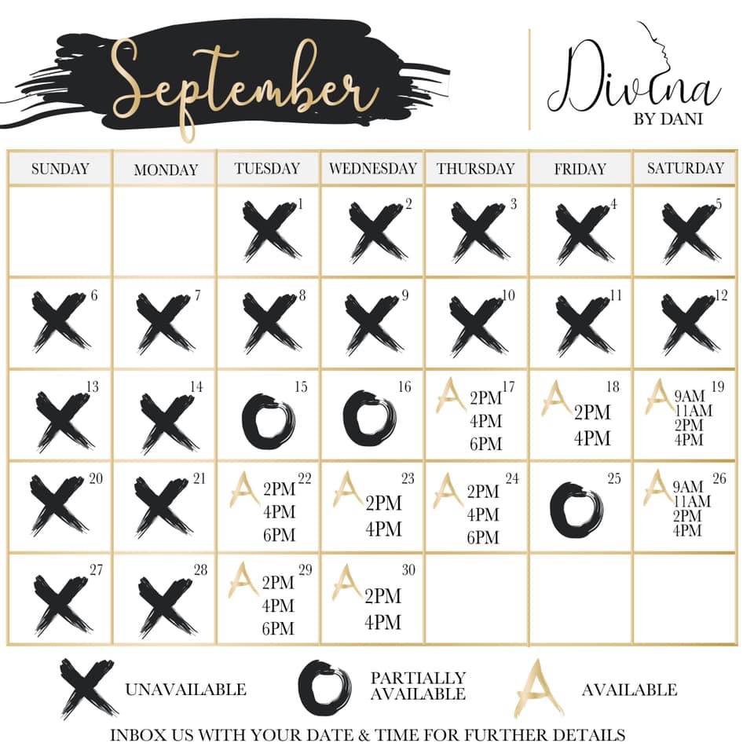
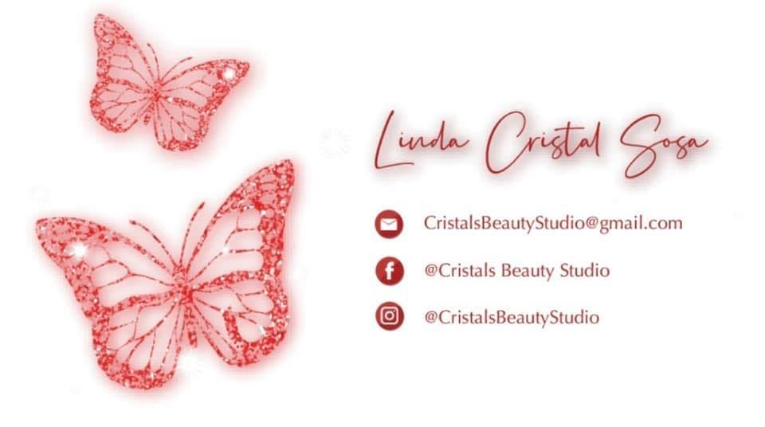
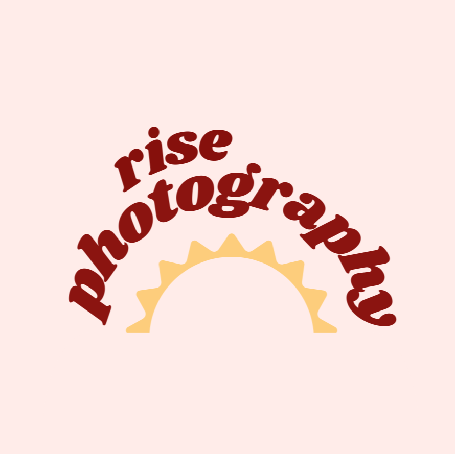
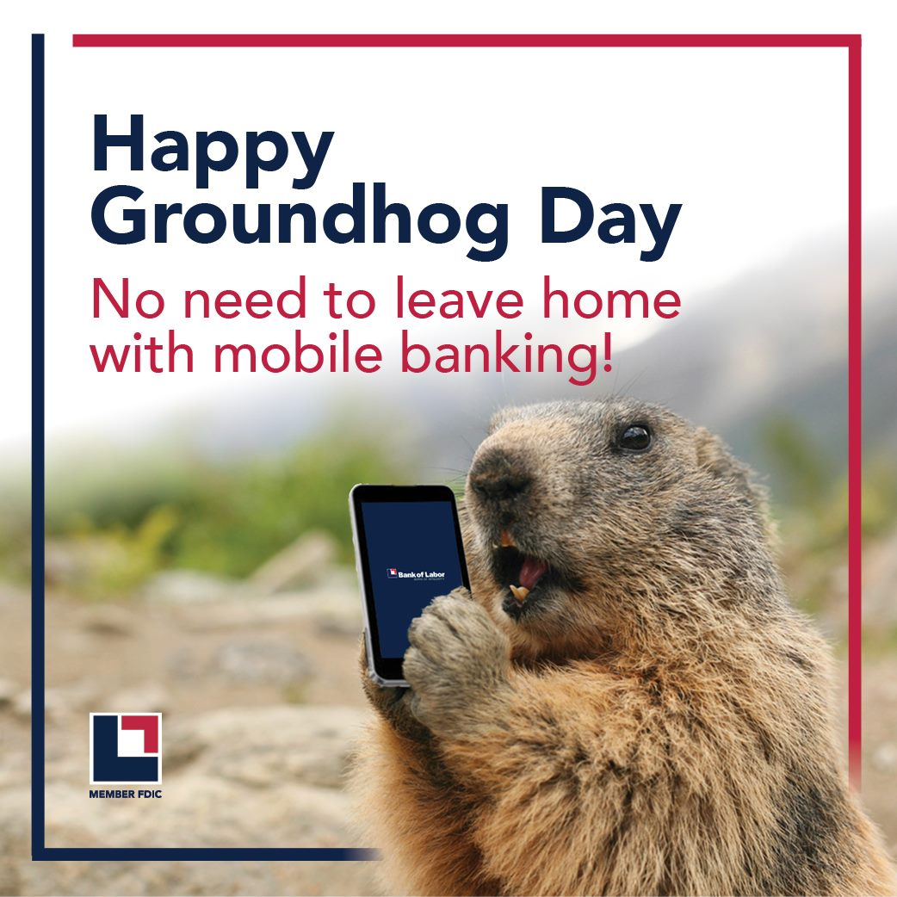

With you in mind, the art comes to life.
Whenever I first start talking to a client it is important for me to get to know who I am working for. Ultimately, the goal is that your art reflects who you are or what you do. Here are just a few examples of my work over the years.
Photoghrapy
Projects from Nov 26 – Dec 3, 2021
To explain my approach to photography, this one quote is enough. "Great photography is about depth of feeling, not depth of field.” – Peter Adams
Brand Design
Projects from Nov 26 – Dec 3, 2021
In the midst of a booming market you brand helps you stand out and makes you unique. I capture the heart of you or your business through design.
- 
- 
- 
- 
- 
Social Media Posts
Projects from February 2018– October 2021
Promoting your presence on social media involves tons of posting! The following company loved sharing fun graphics on a daily basis

- 